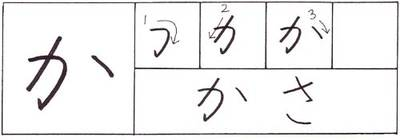
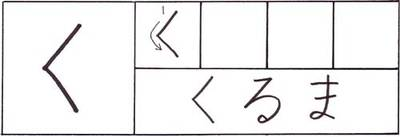
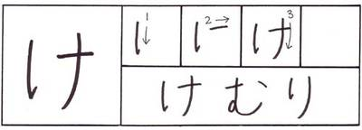
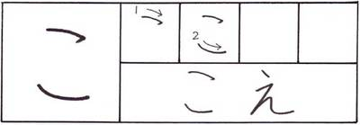

ka か
Příklad: かさ (kasa) --- deštník
ki き

Příklad: きた (kita) --- sever
ku く
Příklad: くるま (kuruma) --- auto
ke け
Příklad: けむり (kemuri) --- kouř
ko こ
Příklad: こえ (koe) --- hlas
Příklad: かさ (kasa) --- deštník
Příklad: きた (kita) --- sever
Příklad: くるま (kuruma) --- auto
Příklad: けむり (kemuri) --- kouř
Příklad: こえ (koe) --- hlas
| < | ^ | > |